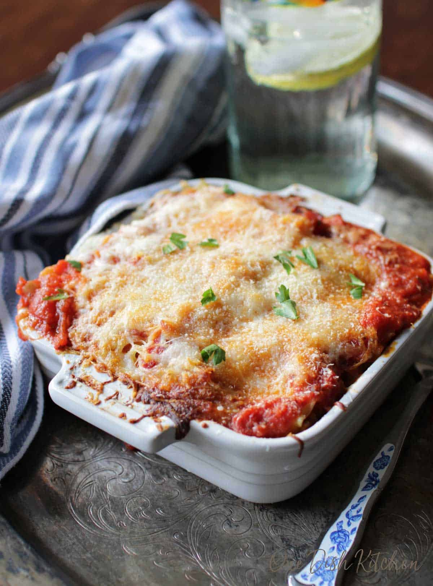

Mini Lasagna Recipe for 1 (or 2)
Recipes Home

Description
This mini lasagna recipe is perfect for individuals who live alone or with their partner, or those who enjoy this lasagna but do not want a ton of leftovers. This mini portion of lasagna uses just two lasagna noodles in a small 5x5 (ish) baking dish and is quick and easy to prepare.
This recipe can be found at this link from OneDishKitchen.
Prep: 20 mins
Cook: 30 mins
Cooling Time: 15 mins
Total: 1 hr 5 mins
Ingredients
- 2 lasagna noodles. This recipe assumes a 5x5-inch baking dish, so the size of your baking dish will determine how many layers to add. You can also break the lasagna noodles in half to create an additional layer for the lasagna.
- 1/2 tablespoon olive oil (can be substituted for avocado, canola, or vegetable oil)
- 1/2 cup chopped onions
- 1 garlic clove [or more :)] (minced)
- 8 ounces ground beef or ground turkey
- 1/2 teaspoon Italian seasoning
- 1/4 teaspoon kosher salt
- 1/8 teaspoon coarsely ground black pepper
- 3/4 cup tomato sauce
- 3/4 cup ricotta cheese
- 2 tablespoons parmesan cheese (have extra for sprinkling on top)
- 1/2 cup shredded mozzarella cheese
Instructions
- Heat oven to 350 degrees F (177 degress C).
- Cook the lasagna noodles according to package directions. Drain and set aside.
- Heat the oil in a medium-sized skillet over a medium heat. Add in the onions and cook for 2 minutes, stirring occasionally.
- Add in the minced garlic and cook, stirring occasionally for a minute more.
- Add the ground beef to the pan and sprinkle the Italian seasoning, salt, and pepper over the meat. Cook and stir the ground beef until meat is no longer pink.
- Stir in 1/2 cup of tomato sauce, reduce the heat to low and simmer for 3 minutes.
- Meanwhile, stir the ricotta and 2 tablespoons of the Parmesan cheese together in a small bowl. Set the bowl aside.
To Assemble the Lasagna
- Spread 3 tablespoons of the sauce into the bottom of a lightly greased small baking dish. Line the bottom of the baking dish with noodles.
- Top the noodles with the meat sauce, followed by the Ricotta mixture, and 1/2 of the shredded Mozzarella.
- Fold the noodles over the meat mixture to cover.
- Top with the remaining sauce, mozzarella cheese, and parmesan cheese.
- Place the baking dish on a large baking sheet (to chatch any spillage) and place in the over to bake for 30 minutes or until cheese on top has melted.
Notes
- Size Matters: Using a 5x5 inch baking dish creates the perfect mini lasagna with two noodles. If your cooking vessel is deeper or longer, you might be able to add another lasagna noodle. However, be cautious not to use a dish that is much larger than the one suggested, as it could result in a dryer lasagna.
- Baking Time: Monitor your lasagna as it bakes, especially if you are adapting the dish size or number of layers. Oven temperatures can vary, and slight adjustments in baking time might be needed to achieve that golden, bubbly perfection.
- Let it Rest: After removing the lasagna from the oven, give it a few minutes to rest before slicing. This allows the layers to settle and the flavors to meld, making for a cleaner, more flavorful cut. Patience pays off with a more satisfying serving experience!